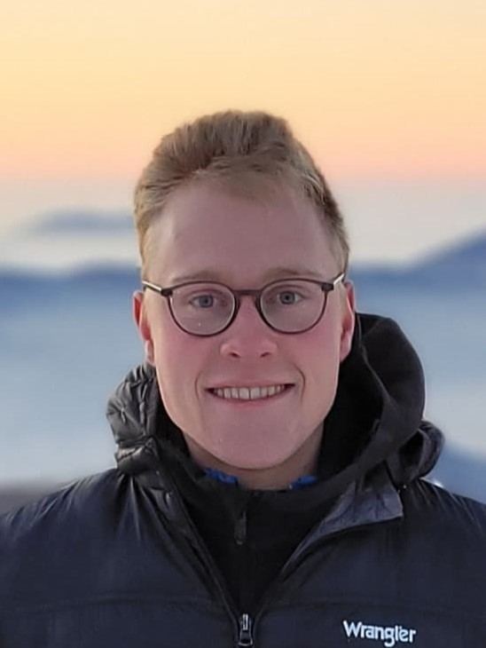
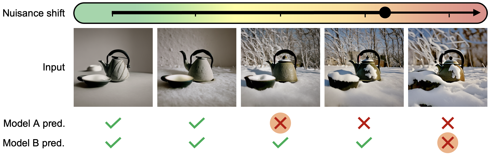
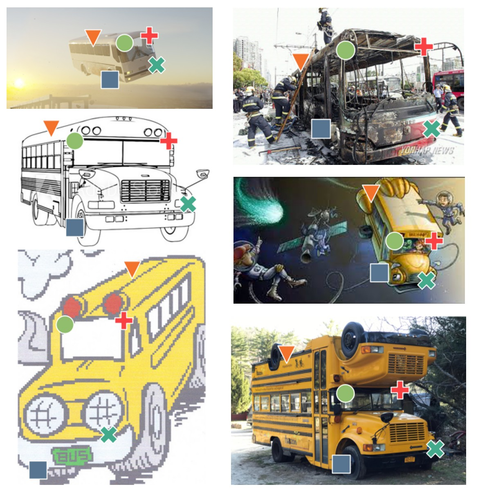
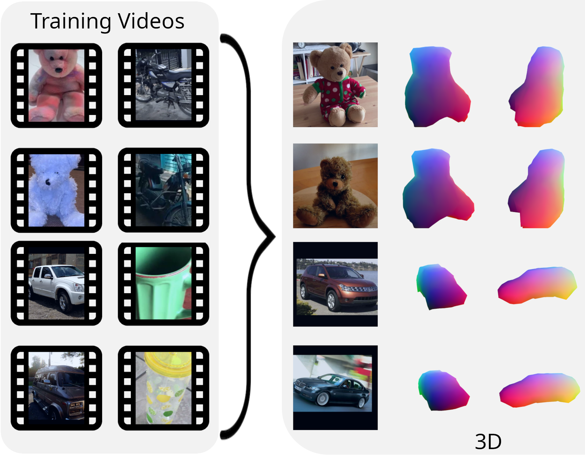
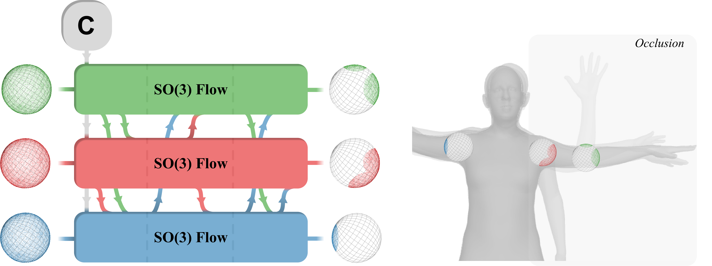
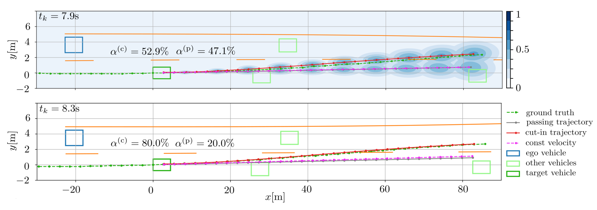
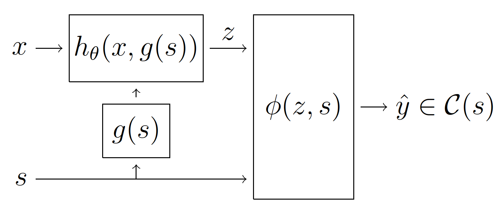

|
Olaf Dünkel I am a second-year Ph.D. student at the Max Planck Institute for Informatics and Saarland University advised by Dr. Adam Kortylewski and Prof. Christian Theobalt. I am part of ELLIS, co-advised by Prof. Christian Rupprecht (VGG, University of Oxford). My research interests lie at the intersection of computer vision and generative models: My goal is to leverage the power of generative models to improve the robustness and generalization of computer vision systems. Other than that, I keep being excited about autonomous driving and robotics. Prior to my PhD, I interned at Porsche and VITA (EPFL), working on autonomous driving, and I pursued my master thesis at KIT, advised by F. Pfaff and T. Salzmann. I obtained my Bachelor's in EECS and my Master's in Signal Processing and Robotics from KIT. |
 |
{kind=link}
Updates
|
ResearchI'm interested in generative models and computer vision. Specifically, I am working on generative benchmarking and on leveraging the knowledge contained in generative models to better solve challenging vision tasks. Previously, I worked on autonomous driving and vehicle trajectory prediction. |

|
Attention (as Discrete-Time Markov) Chains
Y. Erel*, O. Dünkel*, R. Dabral, V. Golyanik, C. Theobalt, A. H. Bermano NeurIPS, 2025. Project Page / Paper / Code |
|  |
CNS-Bench: Benchmarking Image Classifier Robustness Under Continuous Nuisance Shifts
O. Dünkel, A. Jesslen*, J. Xie*, C. Theobalt, C. Rupprecht, A. Kortylewski ICCV, 2025. Project Page / Paper / GitHub |
|  |
Do It Yourself: Learning Semantic Correspondence from Pseudo-Labels
O. Dünkel, T. Wimmer, C. Theobalt, C. Rupprecht, A. Kortylewski ICCV, 2025. Project Page / Paper / GitHub |
|  |
Common3D: Self-Supervised Learning of 3D Morphable Models for Common Objects in Neural Feature Space
L. Sommer, O. Dünkel, C. Theobalt, A. Kortylewski CVPR, 2025. Project Page / Paper / GitHub |
|  |
Normalizing Flows on the Product Space of SO(3) Manifolds for Probabilistic Human Pose Modeling
O. Dünkel, T. Salzmann, F. Pfaff CVPR, 2024. Paper / GitHub |
|  |
Joint Vehicle Trajectory and Cut-In Prediction on Highways using Output Constrained Neural Networks
M. Brosowsky, P. Orschau, O. Dünkel, P. Elspas, D. Slieter, M. Zöllner IEEE Symposium Series on Computational Intelligence, 2021. Paper |
|  |
Sample-Specific Output Constraints for Neural Networks
M. Brosowsky, F. Keck, O. Dünkel, M. Zöllner AAAI, 2021. Paper |
Recent Positions
|
MiscellaneousI am a passionate French horn player and I am regularly playing in various symphony orchestras. Music not only brought me to various places across the world but it keeps being a great regular joy of my life. Other than that I do like sports, especially long distance running, swimming, hiking, and volleyball. |
|
This website is based on Jon Barron's website, whose code is available on Jon Barron's GitHub page. |